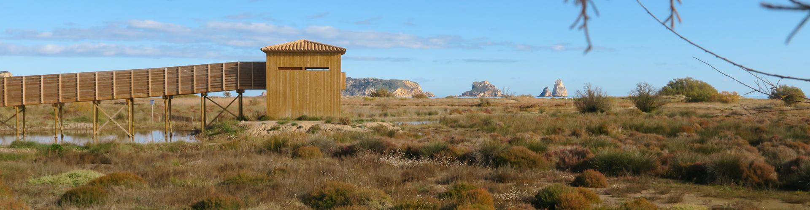

Ruta · Montgrí
La ruta per la maresma de la Pletera fins a la Gola del Ter, us proposa r ecórrer còmodament els espais d'interès ecològic del litoral del Baix Ter. Us convida a conèixer les maresmes de la…